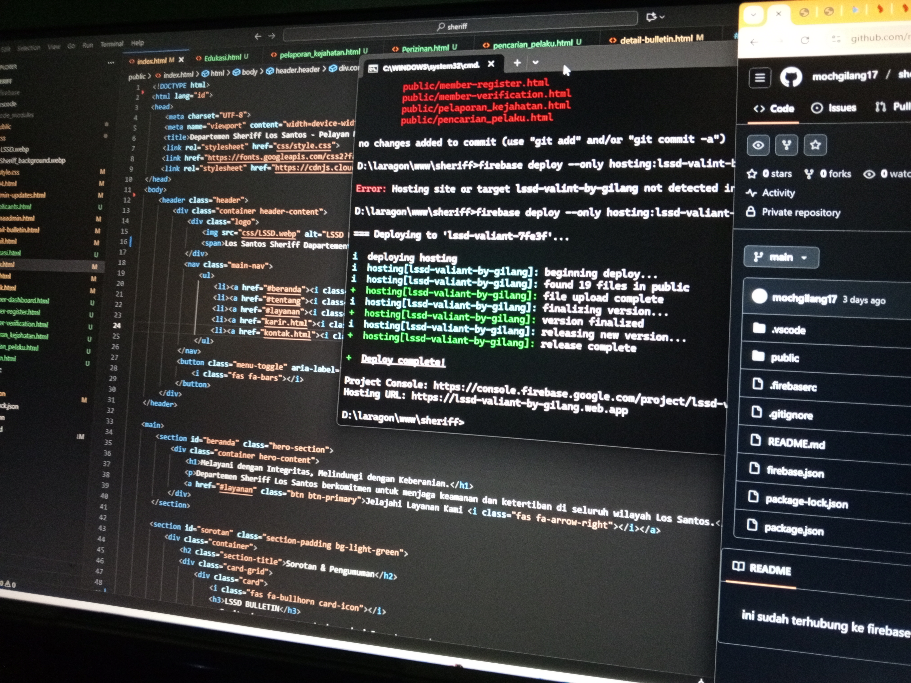
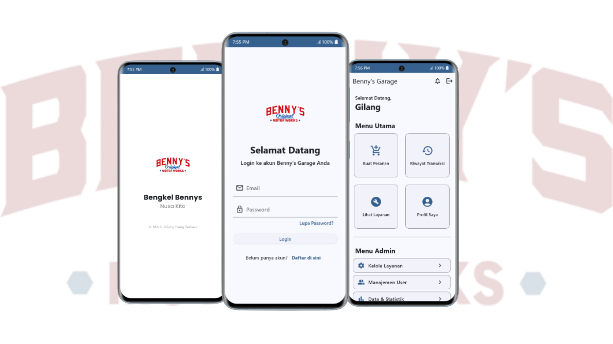
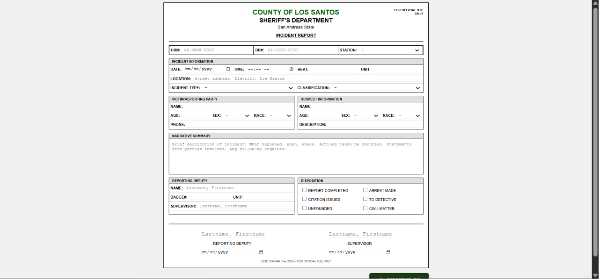
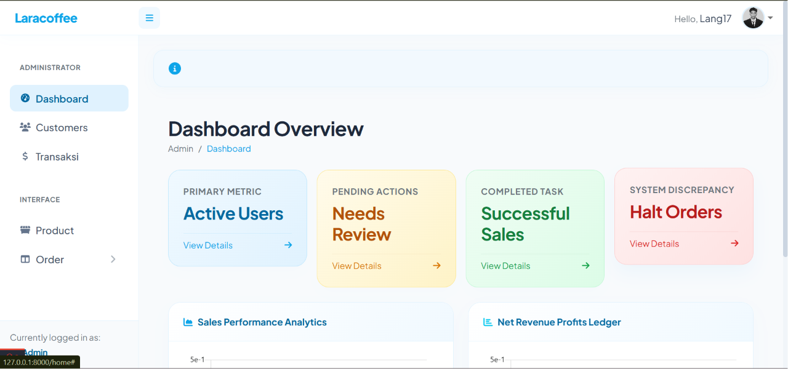

Moch. Gilang Elang Perkasa, S.T.
Berpengalaman dalam mengembangkan aplikasi berbasis HTML, CSS, JavaScript, Laravel, Dart, dan Flutter untuk membangun sistem yang responsif, efisien, dan mudah digunakan.
Latar Belakang

my photo
Tentang Saya
Saya merupakan seorang Software Engineer yang berfokus pada pengembangan aplikasi web, mobile, dan mikrokontroler IoT.
Saya tertarik dalam membangun sistem mudah digunakan, efisien, dan mampu menyelesaikan permasalahan secara efektif. Oleh karena itu, saya selalu berusaha merancang aplikasi dengan mengutamakan pengalaman pengguna (User Experience), performa, serta kemudahan dalam pengembangan dan pemeliharaan.
Tech Stack
Teknologi & Alat
Portofolio
Proyek Unggulan
 Mobile Application
Mobile Application
SiTensi App
Sistem pendukung keputusan menggunakan metode Simple Additive Weighting (SAW) dengan pendekatan R&D Borg and Gall dalam mengembangkan sistem pendeteksi dini resiko terkena hipertensi.

Mobile Applicationbennys - manajemen pencatatan bengkel
Platform manajemen dan monitoring pencatatan bengkel.

Mobile ApplicationPengembangan web pencatatan laporan game.
sistem ini merupakan pengembangan dalam pencatatan laporan dari faction sebuah game roleplay gta samp, dengan menerapkan HTML dan CSS sehingga laporan bisa di export dalam bentuk kertas catatan yang rapi dah seragam.
 website
website
Pengembangan web self service Dine
sistem ini merupakan pengembangan dalam pembuatan website untuk layanan pemesanan makanan secara mandiri, dengan menerapkan laravel dan sehingga website dapat digunakan dengan mudah.

websiteLaracofee
sistem ini merupakan pengembangan dalam pembuatan website untuk sistem pencatatan pesanan pada coffee shop.
 website
website
Pengembangan web sistem pencarian data
sistem ini merupakan pengembangan dalam pembuatan website untuk sistem pencarian data, dengan menerapkan HTML dan CSS dengan mengitengrasikan file JSON yang berisi data, sistem akan membaca dan mencari data tersebut..
Jejak Langkah
Pengalaman & Kolaborasi
PENINGKATAN KETERAMPILAN BRANDING UMKM TARAKAN MELALUI PEMANFAATAN TEKNOLOGI DIGITAL DI ERA 4.0
TarakanMelakukan sosialisasi kepada pelaku UMKM dimana Kemampuan pelaku UMKM di Kota Tarakan mengalami peningkatan dalam memanfaatkan teknologi digital untuk membangun branding, menggunakan software editing, serta mengoptimalkan media sosial sebagai sarana promosi produk.
Lihat DetailPengembangan Website SDA Bulungan
BulunganMenjadi bagian dari tim pengembangan website untuk Dinas Sumber Daya Alam Kabupaten Bulungan, yang bertujuan untuk meningkatkan transparansi dan akses informasi terkait pengelolaan sumber daya alam di wilayah tersebut.
Organisasi Mahasiswa
Universitas Borneo TarakanMengembangkan kemampuan selama berorganisasi dengan cara mengelola kegiatan, membangun jejaring, dan meningkatkan keterampilan kepemimpinan melalui pelatihan dan workshop. Saya menjadi bagian dari beberapa organisasi selama masih perkuliahan, diantaranya:
- Himpunan Mahasiswa Teknik Komputer (HMTK) - Sebagai Anggota dan Kepala Divisi INFOKOM
- Google Developer Student Clubs (GDSC) - Sebagai CoreTeam
- Badan Eksekutif Mahasiswa (BEM) Fakultas Teknik - Sebagai Anggota Divisi INFOKOM
Jejak Kontribusi Kode
Pantauan langsung dari aktivitas publik saya di GitHub. Untuk melihat detail kode, skrip server, atau purwarupa IoT, silakan kunjungi profil saya.
Grafik Kontribusi
Mari berkolaborasi.
Tertarik untuk membangun sistem web interaktif atau membutuhkan solusi arsitektur jaringan dan perangkat keras? Mari berdiskusi.
Jejaring & Koneksi
Social Media & Platform
LinkedIn
Professional
Instagram
Moments
Discord
Community